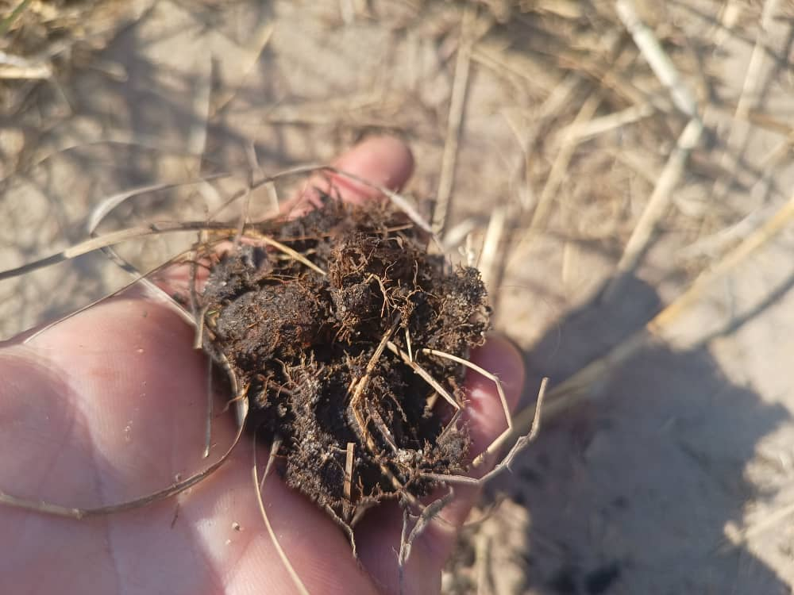
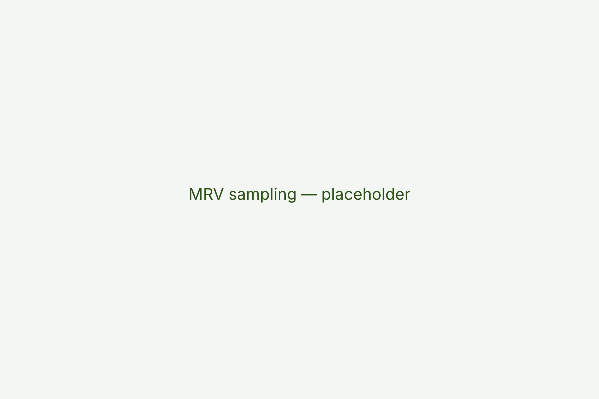

Regenerative grazing
Community-led grazing reforms and rotational systems that restore pasture productivity and increase resilience to drought.
Impact
We combine community-led rangeland restoration, livestock productivity interventions and rigorous monitoring to create resilient landscapes, stronger rural livelihoods and high-integrity carbon removals.



Community-led grazing reforms and rotational systems that restore pasture productivity and increase resilience to drought.
Veterinary support, improved genetics and market access which translate into higher incomes and reduced losses.
MRV systems ensure removals are quantified, auditable and aligned with recognised carbon accounting frameworks.
Our MRV approach combines remote sensing, on-the-ground sampling and community data to ensure transparency, traceability and environmental integrity for carbon and biodiversity outcomes.
Revenue from verified credits funds ongoing monitoring, adaptive management and expanded project coverage.

Investors, donors and partners can help scale restoration across Zambia's rangelands.
Contact us